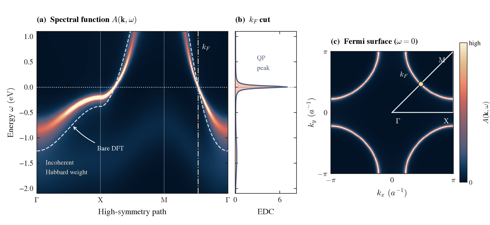
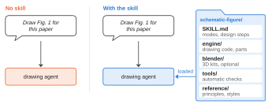
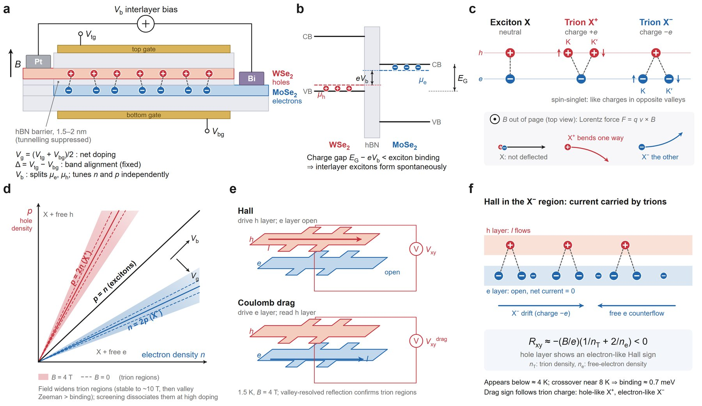
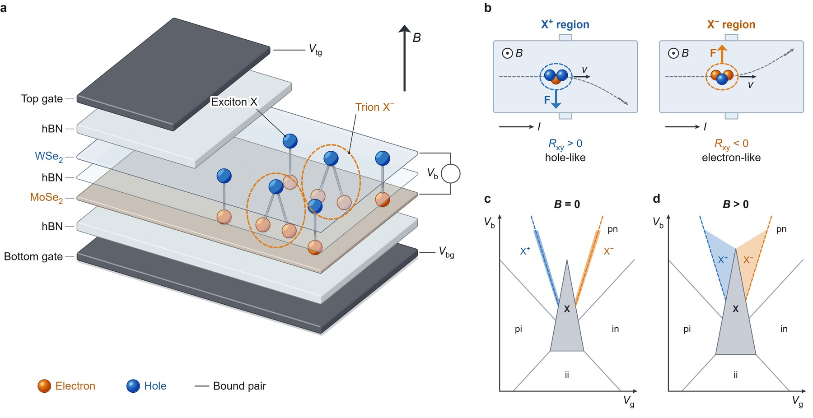
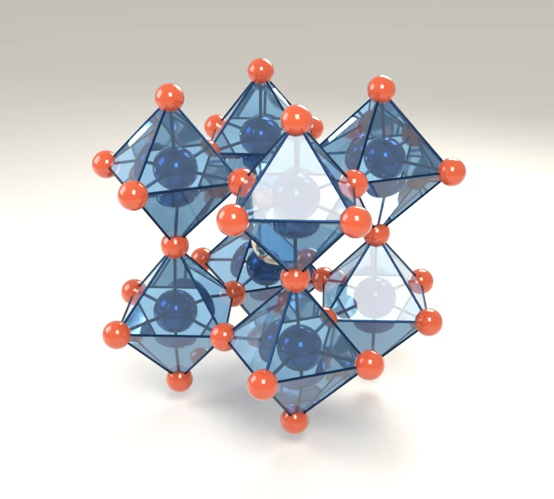

← Resources · Phase 4 (14:00–15:00)
Figures & Presentation
Five Claude Code skills, tested starter templates, live examples, and copy-and-paste prompts for the 14:00–15:00 phase — turning your team's results into clear figures for the 2-page note and the 15:45 lightning talk.
Good scientific figures separate objective design principles (readable font sizes for a paper or projector, colour-blind friendly colour maps matched to your data's symmetry, zero overlapping labels, honest axes, visual self-review) from subjective aesthetics (which palette in the right class, which font family, your visual voice). Hand the principles to Claude as skills so you can focus on the physics and aesthetics.
- Download & let Claude install (30 seconds): click Download all 5 skills
(.zip) below, then paste the 1-line install prompt right under it into Claude Code — Claude
unzips and installs them into your personal
~/.claude/skills/folder for you. Never edit your team repo's.claude/folder (that holds the hackathon's/log-entryand/log-checktools). - Pick only the 1 or 2 skills you need: you do not need all five. Most teams start
with Skill 1 (
/figure-style) + Skill 3 (/render-and-look), and copymbi.mplstyleinto their team repo ascode/team.mplstyleso teammates' plots match. - Check the physics & ship by 15:45: save reproducible scripts and vector PDFs
(
code/fig_<name>.py → figures/<name>.pdf) for your 2-page note, plus clean visuals or HTML demos for your lightning talk.
Unzip ~/Downloads/mbi2026-figure-skills.zip (or wherever I saved it) and install all the skills into my personal ~/.claude/skills/ folder. Do not modify this repo's .claude/ folder.
Roadmap: the five Claude Code skills
The talk walks through these five skills in order. Once installed in ~/.claude/skills/, Claude loads
a skill automatically when relevant, or whenever you name it in a prompt (for example,
Use /figure-style and /render-and-look).
| # | Skill | What it does | Bundled starter |
|---|---|---|---|
| Skill 1 | /figure-style |
Data plots: colour-blind friendly Crameri maps, LaTeX-style math, exact paper/slide sizes, anti-collision polish. | mbi.mplstyle |
| Skill 2 | /schematic |
Editable vector schematics from code (SVG / PDF / TikZ): asks before guessing physics, two drafts, referee critique. | — |
| Skill 3 | /render-and-look |
Visual self-review: Claude opens its rendered PNG, checks every label and inset, fixes the script (≤ 3 rounds). | run after any visual |
| Skill 4 | /html-animation |
Interactive figures and talk animations as one offline HTML page with arrow-key beats and live sliders. | template.html |
| Skill 5 | /blender-scene |
Scripted 3D Blender renders (Cycles ray-tracing or EEVEE) when a browser page isn't enough. | scene_template.py |
| Bonus | /html-fractal |
Animate any calculation the way a fractal is built — level by level, iteration by iteration — as a live HTML figure for your slides, with every number computed by the page. | template.html |
Skill 1 · Data plots (/figure-style)
Matplotlib + Crameri + LaTeX math
Keep one reproducible Python script per figure (code/fig_gap.py → figures/gap.pdf +
.png), sharing
one code/team.mplstyle (copied from skills/figure-style/mbi.mplstyle) across your team.
The bundled style uses Computer Modern LaTeX math (no TeX installation needed) and enforces anti-collision rules
(no dashed lines striking through labels, insets only in empty corners, no clipped peaks).
Why avoid rainbow or jet colour maps? Our eyes do not perceive rainbow hues evenly — bright
yellow and cyan create sharp fake edges even across smooth shading, and rainbow maps fail for colour-blind readers
and greyscale print.
Useful links:
Crameri Scientific Colour Maps
(pip install cmcrameri),
Crameri et al. (2020),
Paul Tol's palettes,
SciencePlots.

jet invents sharp false boundaries across smooth shading, while batlow preserves the
real data.

after.py).
after.py).Use /figure-style and /render-and-look. Read our checked data from code/results.json and write code/fig_main.py to produce figures/main.pdf and figures/main.png (APS double-column, 178 mm wide). 5-second message: [one sentence]. Panels: (a) [...], (b) [...]. Use code/team.mplstyle and Crameri batlow (or vik centred on 0 for signed data). Label every axis and colorbar with quantities and units, then render the PNG, open it to inspect every label and inset, and fix any issues (max 3 rounds).
Skill 2 · Editable vector schematics (/schematic)
SVG / PDF / TikZ from code From Zhao & Wright (Automating schematic figure making, Yale LGW Lab, 2026):
“Doing science is fun, but drawing the schematic figure that explains it has been challenging for us: we were never trained to do it, yet that figure is often the first thing a reader looks at.”
An image generator gives you flat pixels you cannot edit. Equipping Claude with a skill gives you editable vector graphics (SVG and PDF) together with the code that draws them, using a structured plan → two contrasting drafts → referee critique loop.



Use /schematic and /render-and-look. Create an editable vector schematic showing [physical mechanism or crystal geometry] via code/fig_schematic.py -> figures/schematic.svg and .png. Ask me first if any physical detail is ambiguous. Then write a 5-line plan, build two contrasting layout drafts, render both to PNG, inspect them like a PRB referee (check physics accuracy and ~2x readable text), and refine the better draft.
Skill 3 · Visual self-review & repair (/render-and-look)
Run after every visual
An AI writing plotting code without opening the output is flying blind — that is why overlapping labels,
dashed lines striking through equations, insets covering curves, and missing minus signs sneak through. In a 2024
study testing AI on real scientific plots (MatPlotAgent), simply making the AI inspect its own rendered
PNG and fix what it sees raised accuracy from 49% to 61% — the largest gain of any technique.
Pair /render-and-look with any other skill, or run it standalone on an existing plot. It scans every
label and inset one by one for at most 3 rounds and flags anything it could not verify physically, because
your eyes are always the final physics check.
Use /render-and-look on figures/my_plot.png (generated by code/fig_my_plot.py). Open the PNG, inspect every text label, inset, curve, and minus sign like a PRB referee (check collisions, lines crossing text, font size at final column width, units, and physics), fix concrete issues in the script for at most 3 rounds, and tell me what you changed plus anything physical I should double-check myself.
Skill 4 · Interactive talk figures & animations (/html-animation)
Single offline HTML file
For almost any talk animation, a single self-contained HTML page (opening straight in Chrome, Edge, or Firefox
with no internet needed) beats a pre-rendered video: it is ~10–25 kB instead of 50 MB, needs zero render
time, runs smoothly at 60 fps, and lets you pause, step through beats with arrow keys, or drag a physical
parameter live during Q&A.
Start from the bundled template.html (a working
1D phonon chain), or explore the live demos from the talk:
Twisted Bilayer Moiré & Flat-Band Explorer (9
kB) and
3D ABO3 Perovskite Soft Phonon (10 kB).
Other useful tools: Three.js,
smoothstep.io (real-time wave/field shaders),
MatterViz (3D Brillouin zones & Fermi surfaces),
Manim,
VESTA, and
OVITO.
Use /html-animation and /render-and-look. Starting from template.html, build a single offline HTML animation at talk/anim.html showing [phenomenon] using exact numbers from [data file]. Include Space to play/pause, Left/Right arrow keys to step through 3 beats, a live slider for [parameter], and ?t=2.5 URL support so any moment can be frozen for checking. Capture start, middle, and end screenshots and inspect them.
Skill 5 · Scripted 3D renders with Blender (/blender-scene)
Blender Cycles / EEVEE from Python
You don't need to know Blender's menus: Claude writes a Python script that builds your crystal or 3D structure
from data and runs Blender automatically in the background
(blender -b --factory-startup -P scene.py).
Start with HTML (Skill 4) for live interactive talks, and reach for Blender Cycles ray-tracing
when you want photoreal refractive glass, brushed metallic ions, soft studio shadows, or a high-resolution journal
cover figure.
Includes the tested starter scene_template.py
and our perovskite script perovskite_blender.py.
Links: Blender, BlenderMCP.

Use /blender-scene and /render-and-look. Starting from scene_template.py, write code/fig_scene_blender.py to render [3D system] from [data file] automatically via Blender in the background. Keep Standard view transform (true colours) and clean studio lighting; use EEVEE for fast previews or Cycles for photoreal glass and shadows. Render ONE still frame first, inspect the PNG, and only render animation frames once the still looks right.
Bonus · Animate a calculation like a fractal (/html-fractal)
Level by level · one offline HTML file
A fractal is a rule applied again and again, and most calculations have the same shape: a solver iterates, a
simulation steps in time, a lattice grows, a parameter is swept. /html-fractal turns that sequence
into a live figure for your lightning talk or slides: one step per beat, the new part glowing, a HUD with numbers
the page computes (and that Claude checks against Python), click for the next level, double-click to start,
?t= to freeze any moment. It also covers putting the figure into an HTML slide deck (videos, keys,
hidden slides). The bundled template.html is a
working example on a non-fractal problem: the Laplace equation relaxed by Jacobi iteration, with its convergence
plot. Slide 11 of the talk (growing {7,3} hyperbolic lattice, Sierpiński carpet)
was built the same way.
Use /html-fractal and /render-and-look. Starting from template.html, build talk/anim.html that shows [our calculation] step by step: one beat per [iteration / time step / generation / parameter value], using the numbers from [data file or code]. Show [observable] in the HUD, let a click jump to the next step, start paused until a double-click, and check every number on screen against our Python result before you finish.
Further reading & credits
- Rougier, Droettboom & Bourne (2014), Ten Simple Rules for Better Figures, PLoS Comput. Biol. 10, e1003833.
- Nicolas P. Rougier, Scientific Visualization: Python + Matplotlib (free open-access book).
- Crameri, Shephard & Heron (2020), The misuse of colour in science communication, Nat. Commun. 11, 5444.
- Claus O. Wilke, Fundamentals of Data Visualization (free online book).
- Zhao & Wright (2026), Automating schematic figure making (Yale LGW Lab, CC BY 4.0).
- Yang et al. (2024), MatPlotAgent — visual self-review raises AI plot accuracy from 49% to 61%.
Skills and starter templates (mbi.mplstyle, template.html,
scene_template.py) written for MBI 2026, inspired by Pramodh's journal-figure-style,
K-Dense
scientific-visualization,
MatPlotAgent, Pirat83
matplotlib-render-review,
Wright Lab schematic-figure,
and Anthropic's example skills.